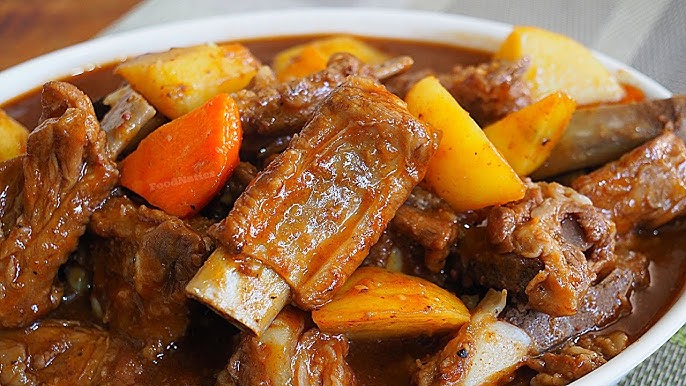

Cinko Pork Sisig
Pork sisig tossed in sisig dressing, topped with onion, chili & calamansi.
₱120

Cinko Kare-Kare
Beef with peanut sauce, served with bagoong. Comfort food at its best!
₱170

Cinko Ribs Caldereta
Beef brisket cooked in tomato, coconut milk, peanut butter, and chili.
₱200

Cinko Adobo
Classic adobo with soy & vinegar, slow-cooked to tender perfection.
₱140

Cinko Lumpia
Crispy spring rolls stuffed with seasoned vegetables and pork.
₱95

Cinko Lechon Kawali
Crispy pork belly fried to golden crunch, served with sauce or vinegar dip.
₱160